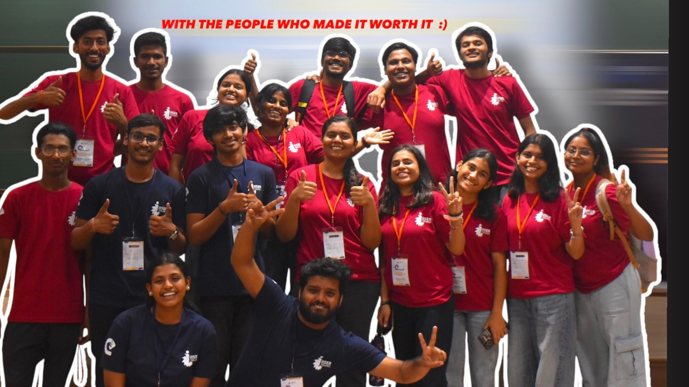

🥉 3rd Prize · IIES Energy Challenge
Energy · ML · IoT
NILM-Based Smart Energy Monitoring System
Developed a Non-Intrusive Load Monitoring (NILM) framework for appliance-level energy disaggregation. Built ML pipeline including Random Forest anomaly detection and LSTM-based load prediction. Designed smart plug architecture integrating sensing hardware, MQTT communication, and FastAPI backend.